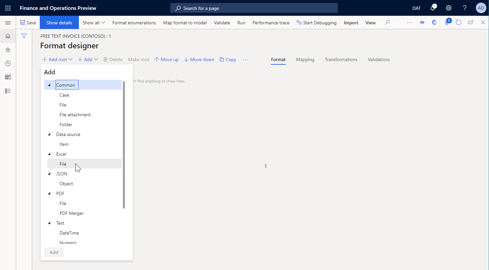
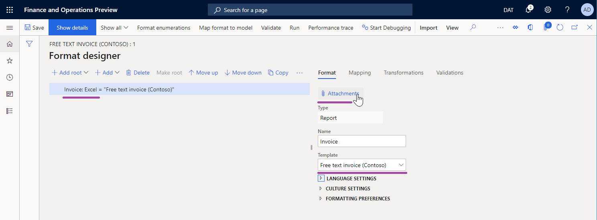
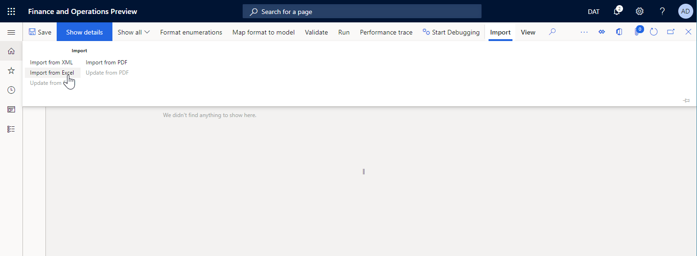
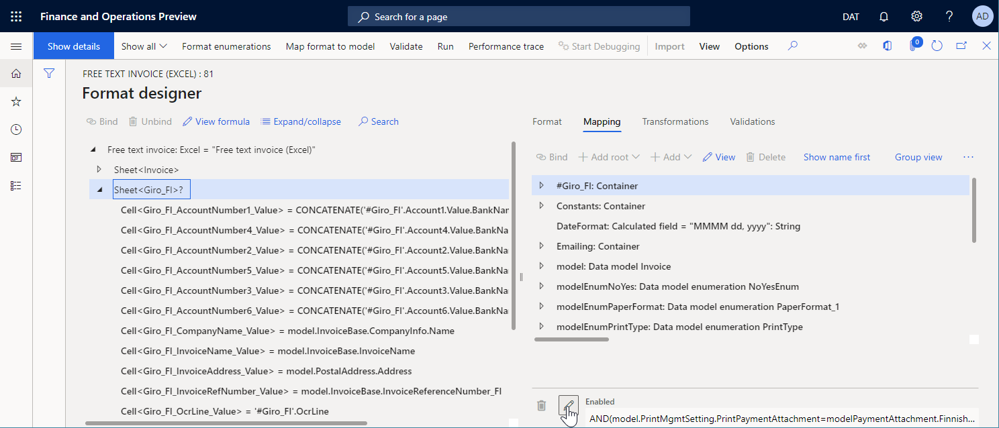

Design a configuration for generating documents in Excel format
You can design an Electronic reporting (ER) format configuration that has an ER format component that you can configure to generate an outbound document in a Microsoft Excel workbook format. Specific ER format components must be used for this purpose.
To learn more about this feature, follow the steps in the topic, Design a configuration for generating reports in OPENXML format.
Add a new ER format
When you add a new ER format configuration to generate an outbound document in an Excel workbook format, you must either select the Excel value for the Format type attribute of the format or leave the Format type attribute blank.
- If you select Excel, you can configure the format to generate an outbound document only in Excel format.
- If you leave the attribute blank, you can configure the format to generate an outbound document in any format that is supported by the ER framework.
To configure the ER format component of the configuration, select Designer on the Action Pane, and open the ER format component for editing in the ER Operation designer.

Excel file component
Manual entry
You must add an Excel\File component to the configured ER format to generate an outbound document in Excel format.

To specify the layout of the outbound document, attach an Excel workbook that has the .xlsx extension to the Excel\File component as the template for outbound documents.
Note
When you manually attach a template, you must use a document type that has been configured for that purpose in the ER parameters (This is an external linThis link was changed due to HTMLfromRepoGenerator).

To specify how the attached template will be filled in when you run the configured ER format, you must add nested Sheet, Range, and Cell components to the Excel\File component. Each nested component must be associated with an Excel named item.
Template import
You can select Import from Excel on the Import tab of the Action Pane to import a new template into a blank ER format. In this example, an Excel\File component will be created automatically, and the imported template will be attached to it. All required ER components will also be created automatically, based on the list of Excel named items that are discovered.

Note
If you want to create the optional Sheet element in the editable ER format, set the Create Excel Sheet format element option to Yes.
Sheet component
The Sheet component indicates a worksheet of the attached Excel workbook that must be filled in. The name of the worksheet in an Excel template is defined in the Sheet property of this component.
Note
This component is optional for Excel workbooks that contain a single worksheet.
On the Mapping tab of the ER Operation designer, you can configure the Enabled property for a Sheet component to specify whether the component must be put in a generated document:
- If an expression of the Enabled property is configured to return True at runtime, or if no expression is configured at all, the appropriate worksheet will be put in the generated document.
- If an expression of the Enabled property is configured to return False at runtime, the generated document won't contain a worksheet.

Range component
The Range component indicates an Excel range that must be controlled by this ER component. The name of the range is defined in the Excel range property of this component.
The Replication direction property specifies whether and how the range will be repeated in a generated document:
- If the Replication direction property is set to No replication, the appropriate Excel range won't be repeated in the generated document.
- If the Replication direction property is set to Vertical, the appropriate Excel range will be repeated in the generated document. Every replicated range is put below the original range in an Excel template. The number of repetitions is defined by the number of records in a data source of the Record list type that is bound to this ER component.
- If the Replication direction property is set to Horizontal, the appropriate Excel range will be repeated in the generated document. Every replicated range is put to the right of the original range in an Excel template. The number of repetitions is defined by the number of records in a data source of the Record list type that is bound to this ER component.
To learn more about horizontal replication, follow the steps in Use horizontally expandable ranges to dynamically add columns in Excel reports.
The Range component can have other nested ER components that are used to enter values in the appropriate Excel named ranges.
If any component of the Text group is used to enter values, the value is entered in an Excel range as a text value.
Note
Use this pattern to format entered values based on the locale that is defined in the application.
If the Cell component of the Excel group is used to enter values, the value is entered in an Excel range as a value of the data type that is defined by the binding of that Cell component (for example, String, Real, or Integer).
Note
Use this pattern to enable the Excel application to format entered values based on the locale of the local computer that opens the outbound document.
On the Mapping tab of the ER Operation designer, you can configure the Enabled property for a Range component to specify whether the component must be put in a generated document:
- If an expression of the Enabled property is configured to return True at runtime, or if no expression is configured at all, the appropriate range will be filled in in the generated document.
- If an expression of the Enabled property is configured to return False at runtime, and if this range doesn't represent the entire rows or columns, the appropriate range won't be filled in in the generated document.
- If an expression of the Enabled property is configured to return False at runtime, and this range represents the entire rows or columns, the generated document will contain those rows and columns as hidden rows and columns.
Cell component
The Cell component is used to fill in Excel named cells, shapes, and pictures. To indicate an Excel named object that must be filled in by a Cell ER component, you must specify the name of that object in the Excel range property of the Cell component.
On the Mapping tab of the ER Operation designer, you can configure the Enabled property for a Cell component to specify whether the object must be filled in in a generated document:
- If an expression of the Enabled property is configured to return True at runtime, or if no expression is configured at all, the appropriate object will be filled in in the generated document. The binding of this Cell component specifies a value that is put in the appropriate object.
- If an expression of the Enabled property is configured to return False at runtime, the appropriate object won't be filled in in the generated document.
When a Cell component is configured to enter a value in a cell, it can be bound with a data source that returns the value of a primitive data type (for example, String, Real, or Integer). In this case, the value is entered in the cell as a value of the same data type.
When a Cell component is configured to enter a value in an Excel shape, it can be bound with a data source that returns a value of a primitive data type (for example, String, Real, or Integer). In this case, the value is entered in the Excel shape as the text of that shape. For values of data types that aren't String, the conversion to text is done automatically.
Note
You can configure a Cell component to fill in a shape only in cases where a shape text property is supported.
When a Cell component is configured to enter a value in an Excel picture, it can be bound with a data source that returns a value of the Container data type that represents an image in binary format. In this case, the value is entered in the Excel picture as an image.
Note
Every Excel picture and shape is considered to be anchored by its upper-left corner to a specific Excel cell or range. If you want to replicate an Excel picture or shape, you must configure the cell or range that it's anchored to as a replicated cell or range.
To learn more about how to embed images and shapes, see Embed images and shapes in documents that you generate by using ER (This is an external linThis link was changed due to HTMLfromRepoGenerator).
Page break component
The PageBreak component forces Excel to start a new page. This component isn't required when you want to use Excel's default paging, but you should use it when you want Excel to follow your ER format to structure paging.
Edit an added ER format
Update a template
You can select Update from Excel on the Import tab of the Action Pane to import an updated template into an editable ER format. During this process, a template of the selected Excel\File component will be replaced by a new template. The content of the editable ER format will be synced with the content of the updated ER template.
- A new ER format component will automatically be created for every Excel name if the ER format component isn't found in the editable format.
- Every ER format component will be deleted from the editable ER format if the appropriate Excel name isn't found for it.
Note
Set the Create Excel Sheet format element option to Yes if you want to create the optional Sheet element in the editable ER format.
If the editable ER format originally contained Sheet elements, we recommend that you set the Create Excel Sheet format element option to Yes when you import an updated template. Otherwise, all nested elements of the original Sheet element will be created from scratch. Therefore, all bindings of the re-created format elements will be lost in the updated ER format.

To learn more about this feature, follow the steps in Modify Electronic reporting formats by reapplying Excel templates.
Validate an ER format
When you validate an ER format that can be edited, a consistency check is done to make sure that the Excel name is present in the Excel template that is currently used. You will be notified about any inconsistencies. For some inconsistencies, the option to automatically fix issues will be offered.

Control the calculation of Excel formulas
When an outbound document in a Microsoft Excel workbook format is generated, some cells of this document might contain Excel formulas. When the Enable usage of EPPlus library in Electronic reporting framework feature is enabled, you can control when the formulas are calculated by changing the value of the Calculation Options parameter in the Excel template that is being used:
- Select Automatic to recalculate all dependent formulas every time a generated document is appended by new ranges, cells, etc.
Note
This might cause a performance issue for Excel templates that contain multiple related formulas.
- Select Manual to avoid formula recalculation when a document is generated.
Note
Formula recalculation is manually forced when a generated document is opened for preview using Excel. Don't use this option if you configure an ER destination that assumes the usage of a generated document without its preview in Excel (PDF conversion, emailing, etc.)because the generated document might not contain values in cells that contain formulas.
Additional resources
Design a configuration for generating reports in OPENXML format
Modify Electronic reporting formats by reapplying Excel templates
Use horizontally expandable ranges to dynamically add columns in Excel reports
Configure Electronic reporting (ER) to pull data into Power BI